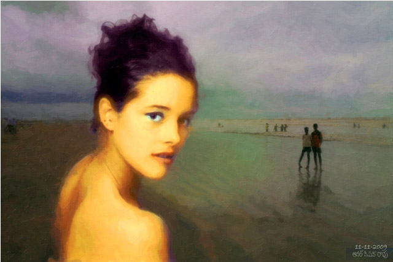

<html>

<head>
<style TYPE="text/css">
<!--a{text-decoration:none}//--></style>
<title>Anil CS Rao — MOCA: Museum of Computer Art</title>

<script language="JavaScript">
<!--
function MM_preloadImages() { //v3.0
  var d=document; if(d.images){ if(!d.MM_p) d.MM_p=new Array();
    var i,j=d.MM_p.length,a=MM_preloadImages.arguments; for(i=0; i<a.length; i++)
    if (a[i].indexOf("#")!=0){ d.MM_p[j]=new Image; d.MM_p[j++].src=a[i];}}
}

function MM_swapImgRestore() { //v3.0
  var i,x,a=document.MM_sr; for(i=0;a&&i<a.length&&(x=a[i])&&x.oSrc;i++) x.src=x.oSrc;
}

function MM_findObj(n, d) { //v4.0
  var p,i,x;  if(!d) d=document; if((p=n.indexOf("?"))>0&&parent.frames.length) {
    d=parent.frames[n.substring(p+1)].document; n=n.substring(0,p);}
  if(!(x=d[n])&&d.all) x=d.all[n]; for (i=0;!x&&i<d.forms.length;i++) x=d.forms[i][n];
  for(i=0;!x&&d.layers&&i<d.layers.length;i++) x=MM_findObj(n,d.layers[i].document);
  if(!x && document.getElementById) x=document.getElementById(n); return x;
}

function MM_swapImage() { //v3.0
  var i,j=0,x,a=MM_swapImage.arguments; document.MM_sr=new Array; for(i=0;i<(a.length-2);i+=3)
   if ((x=MM_findObj(a[i]))!=null){document.MM_sr[j++]=x; if(!x.oSrc) x.oSrc=x.src; x.src=a[i+2];}
}
//-->
</script>
</head>

<body bgcolor="e8e5dc" link="maroon" vlink="maroon" onLoad="MM_preloadImages('../mfoot_buts/mfoot_home.jpg','../mfoot_buts/mfoot_next_over.jpg','../mfoot_buts/mfoot_previous_over.jpg')" alink="maroon">

<font face="Tahoma" color="black" size="2">

<center>
Retrospective 2004-2010<br>
<b>Anil CS Rao</b><br>
Untitled 01

<table border="2" cellspacing="0" cellpadding="0">
<tr> 
<td></td>
</tr>
</table>

<table border="0" cellspacing="0" cellpadding="0" name="mfoot_first">
<tr> 
<td><a href="../index.html" onMouseOut="MM_swapImgRestore()" onMouseOver="MM_swapImage('moca_home','','../mfoot_buts/mfoot_home.jpg',1)">
</a>
</td>

<td><a href="../index.html" onMouseOut="MM_swapImgRestore()" onMouseOver="MM_swapImage('moca_home','','../mfoot_buts/mfoot_home.jpg',1)">
</a>
</td>

<td><a href="rao02.htm" onMouseOut="MM_swapImgRestore()" onMouseOver="MM_swapImage('next','','../mfoot_buts/mfoot_next_over.jpg',1)"></a>
<td><font size="1">(1 of 21)</font></td>
</td>

</tr>
</table><p>

</center>


<blockquote><blockquote><blockquote><blockquote><blockquote>

</font>


Rao <acs.anil@gmail.com> wrote:

    Artist Statement:
    The predominant theme in my work thus far has been an exploration of the female form as it pertains to sensuality - and the connection of sensuality (or pleasure: "kama") to the more profound experiences of spirituality. As many practitioners of what is known as "tantra" - sensuality, pleasure and physical sex are a reflection of the state of bliss that comes to ardent meditation student or practitioner of the various types of "yoga". One must note that most valid practitioners of "tantra" discard the physical sex element commonly associated with this line of thought to be of the least importance.

    One can certainly not negate the beauty of nature - and for the male human being the female is the easiest to appreciate due to the pleasure associated with sexuality. In essence, this exhibit is a transition for me, the artist - from a fascination with feminine beauty to a fascination with the beauty of nature as a whole.


    "There is something about Anil Rao?s mixed media work that immediately captures the viewer?s attention. One could imagine this is the result of the work?s natural exuberance, the sheer contagious joy and reverence that you feel when confronted by his optically sumptuous imagery of Tirupati and Tirumala?a holy Hindu complex in Southen India near Madras . This irrepressible high-spiritedness is fueled by the nature of artist?s object, and in no small measure by Rao?s flair for color and design.

    Fundamentally, the deliberative artificializing motifs in Anil Rao?s images which strengthen the syncretistic aspect of his work remind us that all of our concepts regarding ?art? spring out of the cultural context. That interpretation, that cultural conditioning, forces us to consider our collective desires as human beings to perpetually conjure up an ideal environment whether in spirituality, architecture, poetry or the visual arts. Anil Rao?s photography-based paintings make this ideal tangible by reaching to the higher ground."
    -- John Austin
    Education :

    Masters level coursework at City University of New York, University of Baltimore, San Francisco Institute of Architecture, National Univ. MFA CW Program ? 1992-2010 

    Courses and Seminars: 
    Graphics / Photography:
    Washington School of Photography, Bethesda, Maryland Cal State Fullerton Santa Ana Art Center, CA

    Garment Design / Construction: 
    F.I.T., New York, NY

    1988 Bachelors in Engineering, Pratt Institute, Brooklyn, NY
    BOY'S LATIN SCHOOL OF MARYLAND ? Diploma 1982 

    Publications: 
    SOLO EXHIBITIONS
    February 2010 - Gallery 788, Baltimore, Maryland
    April 2009 - New Art Center, New York, NY
    February 2009 - Annex A-B-C Touchstone Gallery, Washington DC
    December 2008 - Gallery Space, Banjara Hills, Hyderabad, India
    November 2008 - India Art Gallery, Pune, Maharashtra, India 
    2008 - Capitol Arts Network Gallery, Washington School of Photography, Bethesda, MD Annex at Touchstone Gallery, Washington DC 
    2007 - Capitol Arts Network Gallery, Washington School of Photography. Bethesda, MD Gallery Space. Banjara Hills, Hyderabad, India 
    2005 - Gallery Space. Banjara Hills, Hyderabad, India 

    Group Exhibitions:
    2007 - My Space on 7th, Touchstone Gallery, Washington DC MOCA (online)

    Press:
    India Abroad (Indian American Diaspora Newspaper) August 15, 2008 Article by Editor George Joeseph
    Andhra Bhoomi (Telegu language newspaper, India) March 2007 "Digital Karma" interveiw by newspaper staff.
    Debonair Magazine (India), December 2005 "Adobe Photography": interveiw by Editor Derek Bose
    The Hindu - Hyderabad Metro Plus (Indian daily newspaper) June,27.2005 "Bonfire of Convention" by Charumatha Supraja

    Media:
    Television Interviews on Indian television (Hyderabad) in 2005 and 2007

    Professional Affiliations: 
    MOCA - Museum of Computer Art. Brooklyn, NY Capitol Arts Network. Washington DC Gallery Space. Hyderabad, India Contemporary Art Network (CAN). New York, NY

    Publications :
    South Jersey Underground - Sumer 2010 Issue - Featured Artist
    DESI WORLD: 3 GRAPHIC NOVELLAS (Outskirts Press 2008)
    INSTANT KARMA: A Collection of Short Stories (Outskirts Press 2007) 
    VIZAG BLUE: a graphic novella (Frog Books ? Mumbai, India 2006) 
    MIDNITE BIRIYANI: an illustrated novella (Frog Books ? Mumbai, India 2005) 
    DEBONAIR MAGAZINE (India) ? Artwork and Photography featured in the Dec 2005 (cover), January 2006 (cover),
    February 2006 (cover) issues as well as the interior layout of a 2007 issue. 
    PHOSPHERESCENCE MAGAZINE 2007 ? Artwork featured in a 2007 issue of an Independent art magazine. 

    Film/Video: 
    "MOMENTS IN TIME AND SPACE" (2002)? An Independent Short film shot in 16mm and post-production done in Adobe After FX 
    "A COMMENTARY" (2001) ? An Independent Digital Short motion graphics piece with post done in Adobe Premiere and heavily composited using After FX. 
    1989-2003 - Employed by the City of New York, State of California, City of Alexandria (Virginia) and numerous private consulting firms. 


    LINKS:

    http://en.wikipedia.org/wiki/Anil_CS_Rao
    http://anil_cs_rao.imagekind.com/store/
    http://padnil-arts.net/


</blockquote></blockquote></blockquote></blockquote></blockquote>


</font>

<script data-goatcounter="https://museum-of-computer-art.goatcounter.com/count"
        async src="//gc.zgo.at/count.js"></script>
</body>
</html>

